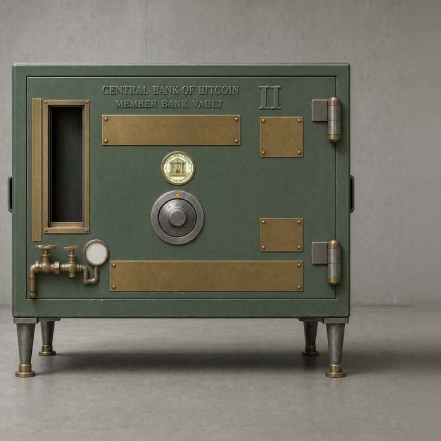

of Bitcoin
03 / Reserve redemption
The reserves are yours.
The choice is final.
Opening releases your vault’s recoverable reserves to your wallet and permanently destroys the vault. Review everything before you decide.
← Back to your desk
Your next step
Only open your vault here. Burning the NFT any other way (a wallet's burn button, another app) destroys everything inside it forever.
This page checks the vault for anything that would be destroyed and tells you before you sign. Nothing is signed until you review and confirm the action.